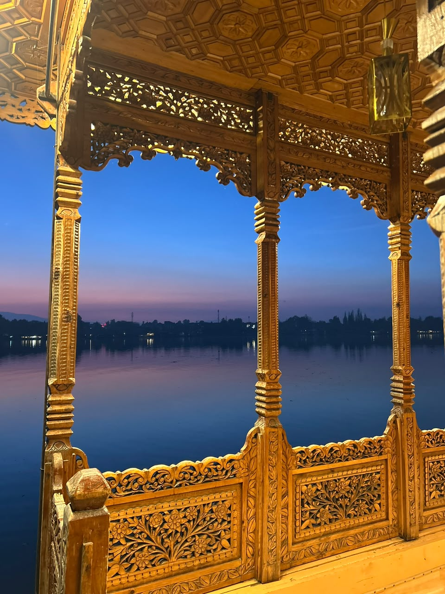
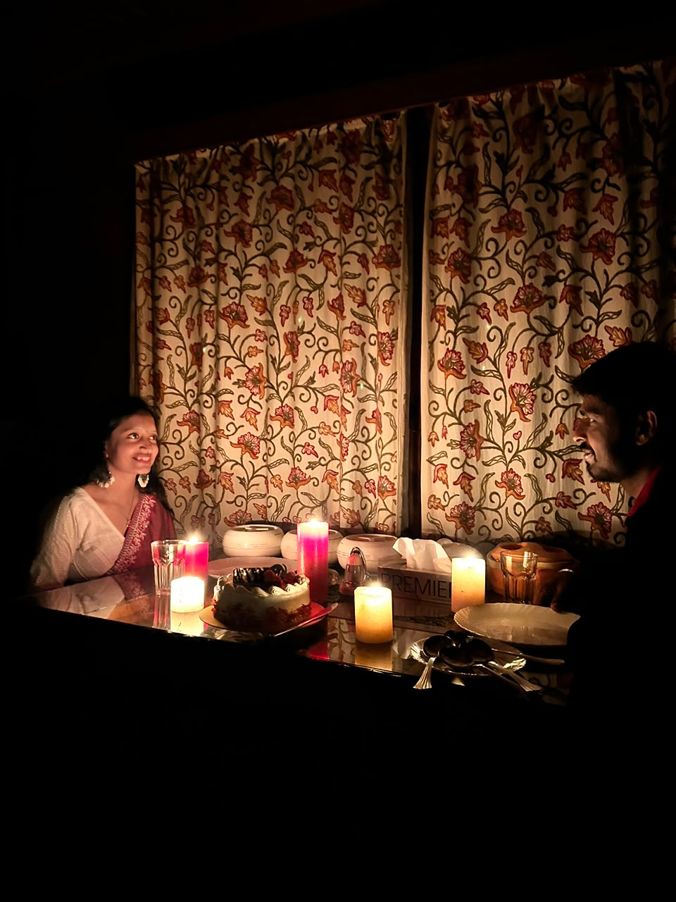

01
Shikara mornings
Glide across the still water while the lake wakes up around you, with tea and mountain light for company.

Let the water set the pace. Your days here are made for noticing more and rushing less.
New Peony is more than a room for the night. It is a floating base for discovering Nigeen Lake, old Srinagar, and the hospitality that makes Kashmir unforgettable.
Tell us what you love and we will shape the day around you: a quiet shikara ride, a long lunch, a market walk, or an evening spent watching the mountains turn gold.
Plan your days
Glide across the still water while the lake wakes up around you, with tea and mountain light for company.
Share fragrant local dishes, from slow-cooked Wazwan favourites to a pot of saffron kahwa in the dining room.
Meet the details of the valley through carved wood, woven textiles, old neighbourhoods, and stories from your hosts.
As the water turns rose and blue, find a quiet corner aboard and let the day end without an itinerary.
“The best plans are the ones that leave room for the lake.”Take the scenic route